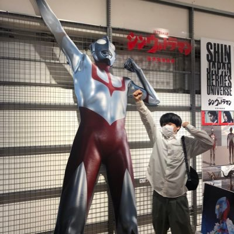

自己紹介

Eiki Soeta 添田英紀
- 1月22日福島県生まれ
- 東京都立大学 システムデザイン研究科 情報科学域 修士卒
- 都内在住ソフトウェアエンジニア
趣味
- 麻雀. 好きな役は混一色
- 映画鑑賞. 好きな監督はデヴィッド・フィンチャー
- ゲーム. 小島秀夫ゲームが好き
- テニス. 中高テニス部でした
- 海外サッカー観戦. 主にプレミアリーグ. 三笘新規
- アイドル. 推しがいるのは きゅるりんってしてみて
研究
関心事はソーシャルメディアでの人々の振る舞い国際会議（査読あり）
- Eiki Soeta, Shohei Yokoyama. "EmojiMap: Toward Multi-Feature Geographic Visualization with Social Media Data", Communications in Computer and Information Science (CCIS), Springer (Selected and extended from MEDES'25) .
- Eiki Soeta, Shohei Yokoyama. "EmojiMap: Toward Multi-Feature Geographic Visualization with Social Media Data", The 17th International Conference on Management of Digital EcoSystems (MEDES’25), Ho Chi Minh, Viet Nam, 2025.11.25.
国内会議（査読なし）
やってきたこと
職歴
クラシル株式会社
- 現在. サーバーサイドエンジニアとして勤務. Ruby on Rails, Next.js, AWS
個人開発
都立大生向け情報共有サイト石池
2020年公開. Python, Django, PostgreSQL, AWS EC2. 技育展2022出展. 2023年3月, 私の学部卒業に伴いherokuに移行し, 管理者を後輩に譲渡 [リンク]
アルバイト・インターン
株式会社AppBrew アルバイト
2022年6月から2024年7月まで. 使用言語は主にPython
株式会社dely（現 クラシル株式会社） 3daysインターン
2024年8月, 主にRuby(Ruby on Rails)でのバックエンド開発
共同通信 長期インターン
2024年9月に14日間, Python(Flask)を用いてバックエンド開発. その際の記事がこちら
クラシル株式会社 内定者インターン
2025年4月から2026年3月まで, Ruby(Ruby on Rails)とTypeScript(Next.js)を主に使ったフルスタック開発
資格等
TOEIC 835点
2023年4月
AtCoder Highest 緑
使用言語はPython. [リンク]